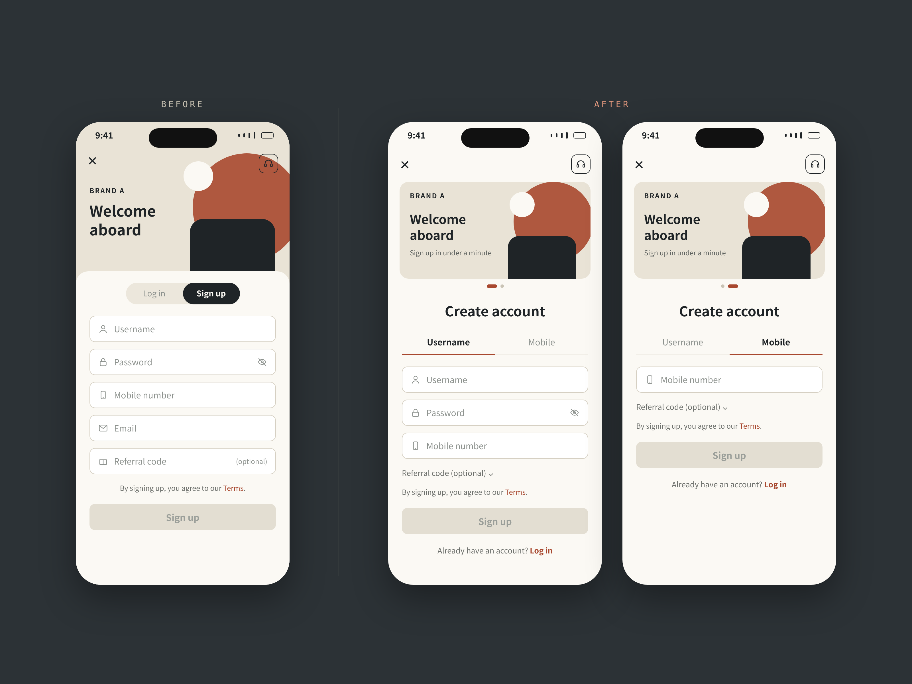
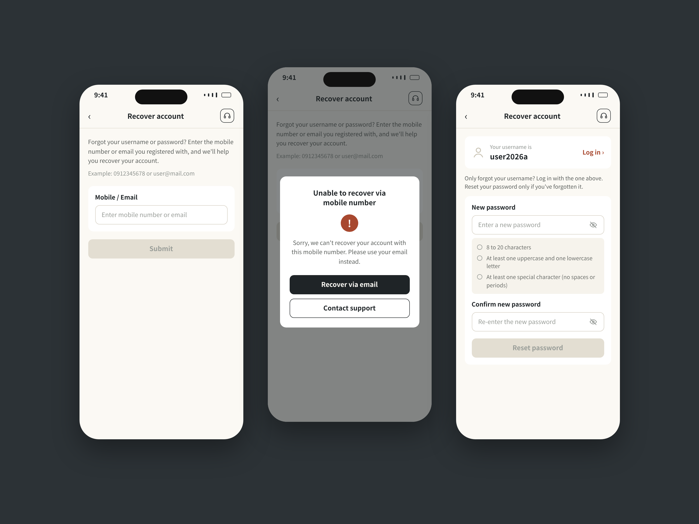
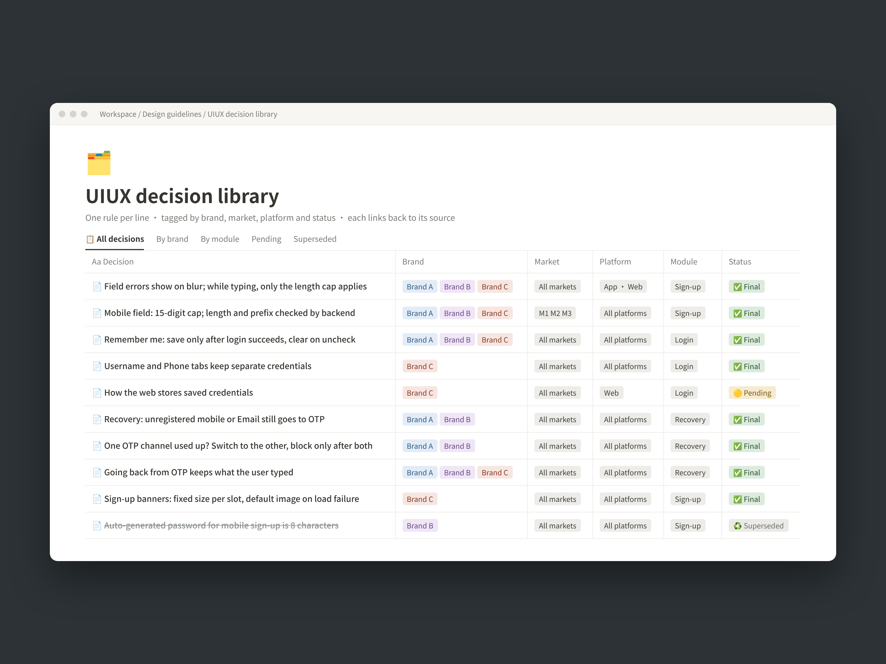
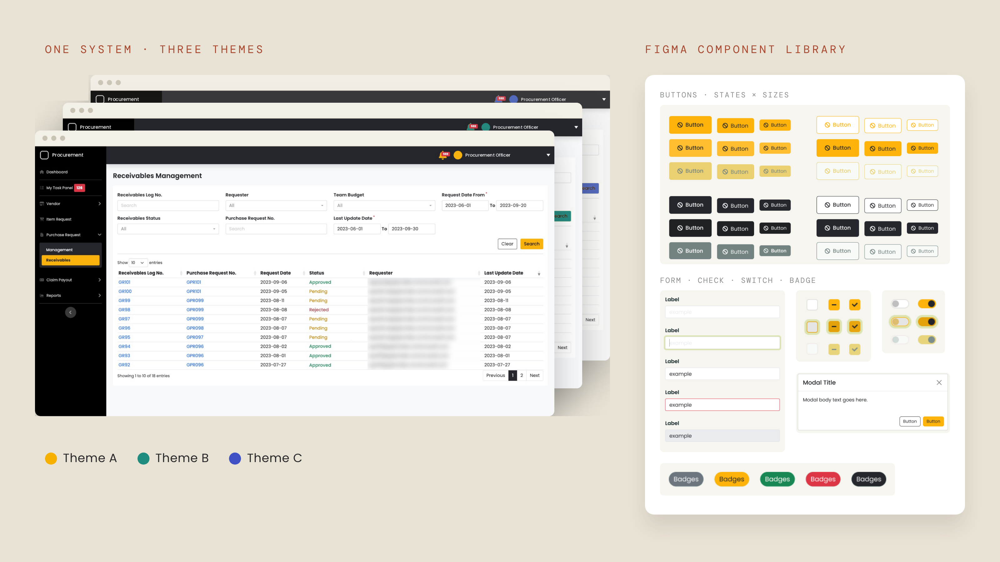
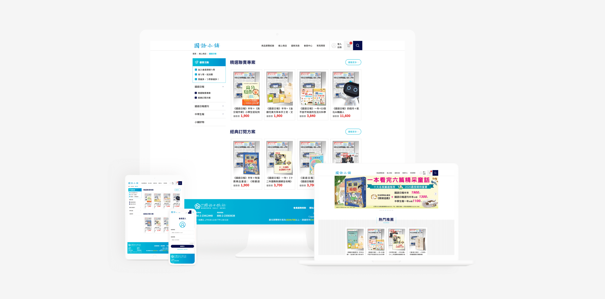

012025.12 – 2026.09
三個品牌、三種規則，收斂成一套
跨三品牌 Onboarding 優化
需求只有一句「新增手機號碼註冊」，最後卻改寫了三個品牌整套的註冊與登入流程。
+18.6%註冊送出日均（對照品牌 +11.8%）
−19%每人重複送出（對照品牌 +9%）
#註冊・登入 #帳號找回 #多語系介面 #UAT
閱讀案例 →PRODUCT DESIGNER｜台北
10 年設計經驗，近年主要負責註冊、登入和帳號找回。畫圖前習慣先把例外情況列出來，像是手機號重複、錯誤訊息會不會透露帳號是否存在、三個市場規則不同時以哪個為準。從 mockup、規格到 UAT 都自己把關。
About|
功能上線後沒出狀況、沒有人需要加班補救，是我覺得這份工作最有成就感的時候。2025 年底團隊改成 squad 編制後，我擔任 Onboarding squad 的主要 UI/UX 設計師，負責三個品牌在中國、泰國、越南市場的註冊、登入與帳號找回流程：畫 mockup、審核驗收標準、主導 UAT 驗收；團隊還沒導入 AI 前，也先用 AI 實驗自己的規格檢查流程。
Works|
所有畫面皆已去識別化

跨三品牌 Onboarding 優化
需求只有一句「新增手機號碼註冊」，最後卻改寫了三個品牌整套的註冊與登入流程。
#註冊・登入 #帳號找回 #多語系介面 #UAT
閱讀案例 →

AI 輔助的 UIUX 決策庫
同一條規則被問了一次又一次，我乾脆替自己建了一個會回答問題的決策庫。
#流程系統建置 #AI 協作 #規格管理
閱讀案例 →Earlier works|
2018 – 2024｜設計公司的客戶專案與企業內部系統

2021–2024｜Design system・UI 與前端集團三家公司共用的採購、收貨與請款系統，我負責介面設計。以 Bootstrap 為基礎建立 design system：可換膚的品牌主題，讓三家公司各自以品牌色使用同一套系統；並建立對應程式碼的 Figma 元件庫（按鈕、表單、狀態標籤、Modal 等，含完整狀態與尺寸變體）。前端人力不足時接手開發，以 React 與 TypeScript 完成所有畫面與功能。

2019｜RWD 網站・會員系統刊物讀者是學生，實際下單的是老師和家長，所以元件以易用為先：大輸入框、醒目按鈕。也從這個專案開始建立元件化的設計方式。
內容以條文、法規等長篇文字為主，設計重點放在閱讀性，以深藍為主色，建立沉穩、有公信力的協會形象。
與品牌、行銷公司、App 廠商四方協作，設計集點、贈品兌換等會員功能。第一次做 App 從零自學，之後也為公司導入新的設計軟體與流程。
Approach|
畫新的 mockup 前，我會先在 production 走一遍，把主流程和例外都列出來，像是手機號重複、尚未驗證、帳號被鎖。這些情況都先想好，後面才不容易需要整個重改。
在註冊和登入都有「手機／帳號」兩個 tab，但切換規則我刻意做得不一樣：註冊是想盡快完成，因此共用的欄位切換時會連動；登入是兩組不同的憑證，所以必須各自記住、不互相影響。
錯誤訊息要寫到用戶看得懂，但不能讓人從訊息判斷帳號存不存在。帳號找回流程裡，沒註冊的手機一樣會進到 OTP 頁，但是不會寄出驗證碼；一般用戶察覺不到差別，想試探的人也問不出結果。
三個品牌、三個市場先訂出共用的規則，各品牌特有的再另外標。mockup 上我會用「新增」「修改」標出和 production 不同的地方，工程師知道要改哪裡，QA 也知道要如何測試。
Career|
Contact|
正在尋找產品設計相關職缺，歡迎來信聊聊。
PRODUCT DESIGNER — TAIPEI
Ten years in design, lately focused on sign-up, login and account recovery. Before I draw, I list the exceptions: a mobile number that's already in use, whether an error message reveals that an account exists, which rule wins when three markets differ. I own the work from mockups and specs through UAT.
About|
What I find most rewarding is a launch that goes smoothly, with no one staying late to fix it. After the team reorganized into squads in late 2025, I became the lead UI/UX designer on the onboarding squad, owning sign-up, login and account recovery for three brands across China, Thailand and Vietnam: mockups, reviewing acceptance criteria, leading UI/UX checks in UAT. Before my team adopted AI, I was already testing an AI-assisted spec review workflow on my own.
Works|
All screens anonymized
Onboarding redesign across three brands
The brief was one line: "add mobile sign-up." It ended up reshaping sign-up and login across three brands.
#Sign-up & login #Account recovery #Multi-language UI #UAT
READ MORE →Username & password recovery
When someone enters a mobile number that was never registered, how should the screen respond so it can't be used to test numbers one by one?
#Account recovery #Edge cases #Security
READ MORE →An AI-assisted design decision library
After answering the same rule questions again and again, I built myself a decision library that answers them.
#Workflow systems #AI workflows #Spec management
READ MORE →Earlier works|
2018 – 2024, agency client projects and an in-house system
A purchasing, receiving and claims system shared by three companies in one group; I designed the interface. I built a Bootstrap-based design system: themable brand skins let each company run the same system in its own colors, backed by a Figma component library mapped to code (buttons, forms, status badges, modals and more, with full state and size variants). When front-end help ran short, I took over development and built every screen and feature with React and TypeScript.
Readers are children, but buyers are teachers and parents, so every component put ease of use first: large inputs, clear buttons. It was also where I started designing with reusable components.
Mostly long regulatory text, so readability led the design, with a deep-blue palette for a calm, credible identity.
Worked across four parties (the brand, a marketing agency, the app vendor and our studio) on loyalty points and reward redemption. My first app, self-taught from scratch; it later led me to bring new design tools and workflow into the studio.
Approach|
Before drawing a new mockup, I walk through production and list the main path and the exceptions, such as a mobile number already in use, an unverified account or a locked account. Working these out early means fewer full redesigns later.
Sign-up and login both have Mobile and Username tabs, but I deliberately gave them different switching rules. Sign-up is about finishing fast, so shared fields carry over when you switch; login holds two different sets of credentials, so each tab remembers its own and they don't interfere.
Error messages should make sense to users without letting anyone tell whether an account exists. In account recovery, an unregistered number still reaches the OTP page, but no code is sent. Real users don't notice a difference, and anyone probing learns nothing.
Across three brands and three markets, we first set the shared rules, then marked what's brand-specific. On mockups I tag what's new and what's changed against production, so engineers know what to change and QA knows how to test it.
Career|
Contact|
Open to product design roles. I would love to hear from you.